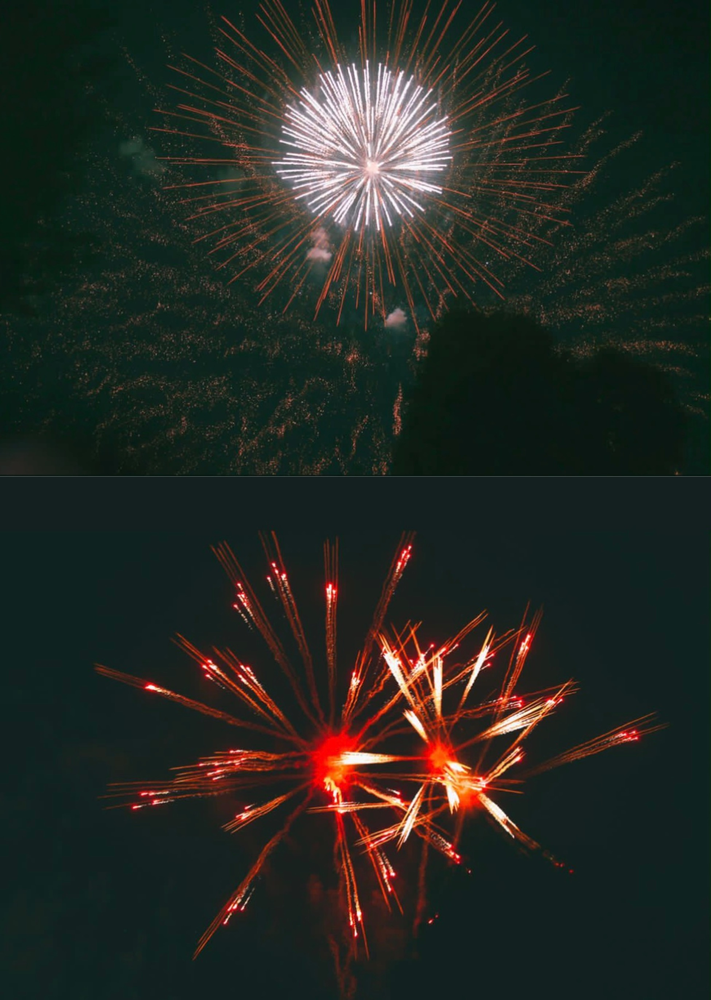
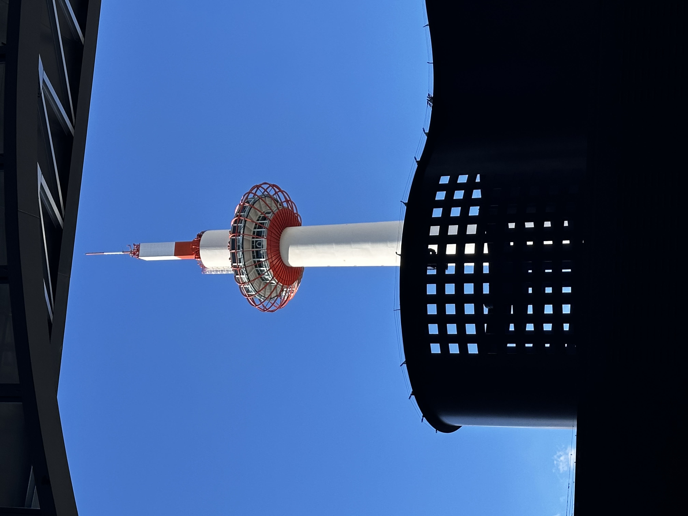
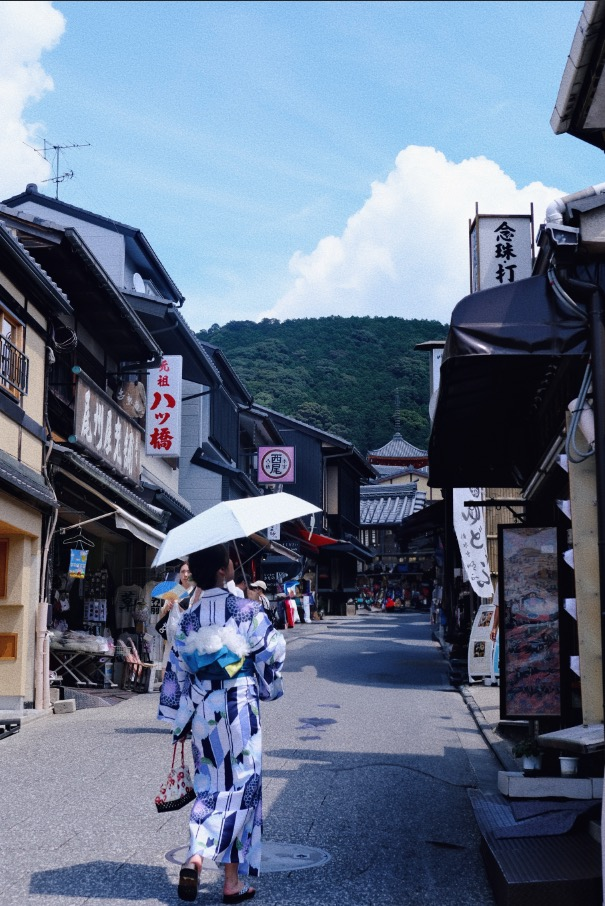

Tokyo·Japan


Hakone, nestled near Tokyo, offers serene views of a distant,
snow-melted Mount Fuji in summer and warm hot springs in winter.
Meanwhile, Tokyo pulses with vibrant city life, allowing for a
morning shopping spree in Ginza and an afternoon walk at Asakusa
Temple, with the Tokyo Skytree ever-present. The highlight? The
August firework festival, a breathtaking display showcasing Japan's
dedication to artistry and celebration, effortlessly blending the
tranquility of Hakone with Tokyo's urban energy.

Kyoto · Japan



Kyoto is a city embodies Japan history and cultural heritage. Stepping
out of the train station, one is immediately greeted by the iconic
Kyoto Tower, its silhouette elegantly contrasted against the blue sky.
By day, the lanes of Ninenzaka and Sannenzaka come alive with people
donning traditional attire, exploring the quaint shops that line the
streets. As evening descends, a visit to Chidori-ji offers a serene
immersion into temple culture, encapsulating the timeless spirit of
Kyoto.